7. Posterior Estimation for SIR-like Models#
Author: Stefan T. Radev
import datetime
import matplotlib.pyplot as plt
import numpy as np
import pandas as pd
import bayesflow as bf
import keras
WARNING:bayesflow:Multiple Keras-compatible backends detected (JAX, PyTorch, TensorFlow).
Defaulting to JAX.
To override, set the KERAS_BACKEND environment variable before importing bayesflow.
See: https://keras.io/getting_started/#configuring-your-backend
INFO:2026-02-28 21:23:27,884:jax._src.xla_bridge:834: Unable to initialize backend 'tpu': UNIMPLEMENTED: LoadPjrtPlugin is not implemented on windows yet.
INFO:jax._src.xla_bridge:Unable to initialize backend 'tpu': UNIMPLEMENTED: LoadPjrtPlugin is not implemented on windows yet.
INFO:bayesflow:Using backend 'jax'
7.1. Introduction#
In this tutorial, we will illustrate how to perform posterior inference on simple, stationary SIR-like models (complex models will be tackled in a further notebook). SIR-like models comprise suitable illustrative examples, since they generate time-series and their outputs represent the results of solving a system of ordinary differential equations (ODEs).
The details for tackling stochastic epidemiological models with neural networks are described in our corresponding paper, which you can consult for a more formal exposition and a more comprehensive treatment of neural architectures:
OutbreakFlow: Model-based Bayesian inference of disease outbreak dynamics with invertible neural networks and its application to the COVID-19 pandemics in Germany. https://journals.plos.org/ploscompbiol/article?id=10.1371/journal.pcbi.1009472
Integrating artificial intelligence with mechanistic epidemiological modeling: a scoping review of opportunities and challenges. https://www.nature.com/articles/s41467-024-55461-x
7.2. Defining the Simulator #
RNG = np.random.default_rng(2026)
As described in our very first notebook, a generative model consists of a prior (encoding suitable parameter ranges) and a simulator (generating data given simulations). Our underlying model distinguishes between susceptible, \(S\), infected, \(I\), and recovered, \(R\), individuals with infection and recovery occurring at a constant transmission rate \(\lambda\) and constant recovery rate \(\mu\), respectively. The model dynamics are governed by the following system of ODEs:
with \(N = S + I + R\) denoting the total population size. For the purpose of forward inference (simulation), we will use a time step of \(dt = 1\), corresponding to daily case reports. In addition to the ODE parameters \(\lambda\) and \(\mu\), we consider a reporting delay parameter \(L\) and a dispersion parameter \(\psi\), which affect the number of reported infected individuals via a negative binomial disttribution (https://en.wikipedia.org/wiki/Negative_binomial_distribution):
In this way, we connect the latent disease model to an observation model, which renders the relationship between parameters and data a stochastic one. Note, that the observation model induces a further parameter \(\psi\), responsible for the dispersion of the noise. Finally, we will also treat the number of initially infected individuals, \(I_0\) as an unknown parameter (having its own prior distribution).
7.2.1. Prior #
We will place the following prior distributions over the five model parameters, summarized in the table below:
How did we come up with these priors? In this case, we rely on the domain expertise and previous research (https://www.science.org/doi/10.1126/science.abb9789). In addition, the new parameter \(\psi\) follows an exponential distribution, which restricts it to positive numbers. Below is the implementation of these priors:
def prior():
"""Generates a random draw from the joint prior."""
lambd = RNG.lognormal(mean=np.log(0.4), sigma=0.5)
mu = RNG.lognormal(mean=np.log(1 / 8), sigma=0.2)
D = RNG.lognormal(mean=np.log(8), sigma=0.2)
I0 = RNG.gamma(shape=2, scale=20)
psi = RNG.exponential(5)
return {"lambd": lambd, "mu": mu, "D": D, "I0": I0, "psi": psi}
7.2.2. Observation Model (Implicit Likelihood Function) #
def convert_params(mu, phi):
"""Helper function to convert mean/dispersion parameterization of a negative binomial to N and p,
as expected by numpy's negative_binomial.
See https://en.wikipedia.org/wiki/Negative_binomial_distribution#Alternative_formulations
"""
r = phi
var = mu + 1 / r * mu**2
p = (var - mu) / var
return r, 1 - p
def stationary_SIR(lambd, mu, D, I0, psi, N=83e6, T=14, eps=1e-5):
"""Performs a forward simulation from the stationary SIR model given a random draw from the prior."""
# Extract parameters and round I0 and D
I0 = np.ceil(I0)
D = int(round(D))
# Initial conditions
S, I, R = [N - I0], [I0], [0]
# Reported new cases
C = [I0]
# Simulate T-1 timesteps
for t in range(1, T + D):
# Calculate new cases
I_new = lambd * (I[-1] * S[-1] / N)
# SIR equations
S_t = S[-1] - I_new
I_t = np.clip(I[-1] + I_new - mu * I[-1], 0.0, N)
R_t = np.clip(R[-1] + mu * I[-1], 0.0, N)
# Track
S.append(S_t)
I.append(I_t)
R.append(R_t)
C.append(I_new)
reparam = convert_params(np.clip(np.array(C[D:]), 0, N) + eps, psi)
C_obs = RNG.negative_binomial(reparam[0], reparam[1])
return dict(cases=C_obs)
As you can see, in addition to the parameters, our simulator requires two further arguments: the total population size \(N\) and the time horizon \(T\). These are quantities over which we can amortize (i.e., context variables), but for this example, we will just use the population of Germany and the first two weeks of the pandemics (i.e., \(T=14\)), in the same vein as https://www.science.org/doi/10.1126/science.abb9789.
7.2.3. Loading Real Data #
We will define a simple helper function to load the actually reported cases in 2020 for the first three weeks of the Covid-19 pandemic in Germany.
def load_data():
"""Helper function to load cumulative cases and transform them to new cases."""
confirmed_cases_url = "https://raw.githubusercontent.com/CSSEGISandData/COVID-19/master/csse_covid_19_data/csse_covid_19_time_series/time_series_covid19_confirmed_global.csv"
confirmed_cases = pd.read_csv(confirmed_cases_url, sep=",")
date_data_begin = datetime.date(2020, 3, 1)
date_data_end = datetime.date(2020, 3, 15)
format_date = lambda date_py: f"{date_py.month}/{date_py.day}/{str(date_py.year)[2:4]}"
date_formatted_begin = format_date(date_data_begin)
date_formatted_end = format_date(date_data_end)
cases_obs = np.array(
confirmed_cases.loc[confirmed_cases["Country/Region"] == "Germany", date_formatted_begin:date_formatted_end]
)[0]
new_cases_obs = np.diff(cases_obs)
return new_cases_obs
7.2.4. Stitiching Things Together #
We can combine the prior \(p(\theta)\) and the observation model \(p(x_{1:T}\mid\theta)\) into a joint model \(p(\theta, x_{1:T}) = p(\theta) \; p(x_{1:T}\mid\theta)\) using the make_simulator builder.
The resulting object can now generate batches of simulations.
simulator = bf.make_simulator([prior, stationary_SIR])
test_sims = simulator.sample(batch_size=2)
print(test_sims["lambd"].shape)
print(test_sims["D"].shape)
print(test_sims["cases"].shape)
(2, 1)
(2, 1)
(2, 14)
7.3. Prior Checking #
Any principled Bayesian workflow requires some prior predictive or prior pushforward checks to ensure that the prior specification is consistent with domain expertise (see https://betanalpha.github.io/assets/case_studies/principled_bayesian_workflow.html). The BayesFlow library provides some rudimentary visual tools for performing prior checking. For instance, we can visually inspect the joint prior in the form of bivariate plots. We can focus on particular parameter combinations, such as \(\lambda\), \(\mu\), and \(D\):
prior_samples = simulator.simulators[0].sample(1000)
grid = bf.diagnostics.plots.pairs_samples(
prior_samples, variable_keys=["lambd", "mu", "D"]
)
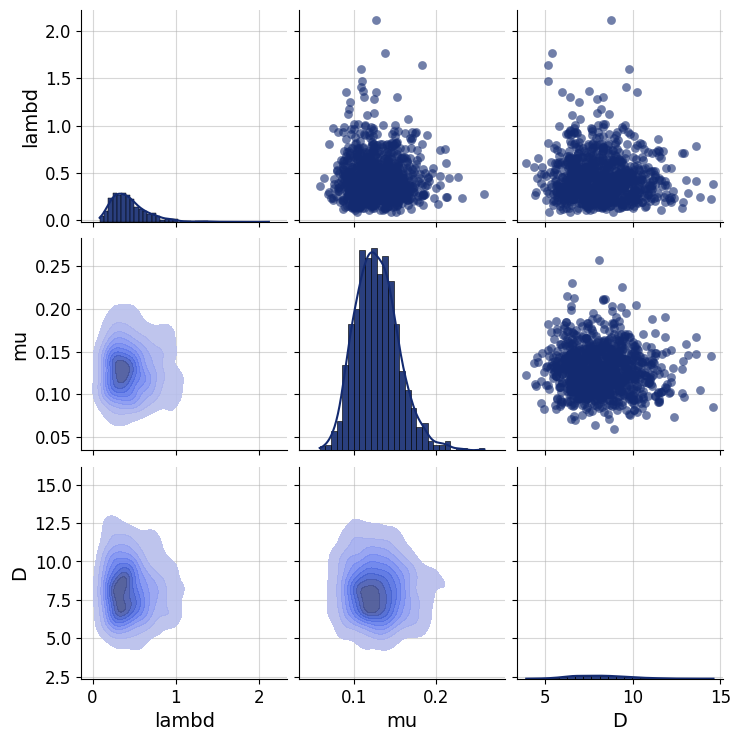
7.4. Defining the Adapter#
We need to ensure that the outputs of the forward model are suitable for processing with neural networks. Currently, they are not, since our data \(x_{1:T}\) consists of large integer (count) values. However, neural networks like scaled data. Furthermore, our parameters \(\theta\) exhibit widely different scales due to their prior specification and role in the simulator. Finally, BayesFlow needs to know which variables are to be inferred and which ones are to be processed by the summary network before being passed to the inference network. We handle all of these steps using an Adapter.
Since all of our parameters and observables can only take on positive values, we will apply a log plus one transform to all quantities. Note, that BayesFlow expects the following keys to be present in the final outputs of your configured simulations:
inference_variables: These are the variables we are inferring.summary_variables: These are the variables that are compressed throgh a summary network and used for inferring the inference variables.
Thus, what our approximators are learning is \(p(\text{inference variables} \mid t(\text{summary variables}))\), where \(t\) is the summary network.
adapter = (
bf.adapters.Adapter()
.convert_dtype("float64", "float32")
.as_time_series("cases")
.concatenate(["lambd", "mu", "D", "I0", "psi"], into="inference_variables")
.rename("cases", "summary_variables")
# since all our variables are non-negative (zero or larger), the next call transforms them
# to the unconstrained real space and can be back-transformed under the hood
.log(["inference_variables", "summary_variables"], p1=True)
)
adapter
Adapter([0: ConvertDType -> 1: AsTimeSeries -> 2: Concatenate(['lambd', 'mu', 'D', 'I0', 'psi'] -> 'inference_variables') -> 3: Rename('cases' -> 'summary_variables') -> 4: Log])
# Let's check out the new shapes
adapted_sims = adapter(simulator.sample(2))
print(adapted_sims["summary_variables"].shape)
print(adapted_sims["inference_variables"].shape)
(2, 14, 1)
(2, 5)
7.5. Defining the Neural Approximator #
We can now proceed to define our BayesFlow neural architecture, that is, combine a summary network with an inference network.
7.5.1. Summary Network #
Since our simulator outputs 3D tensors of shape (batch_size, T = 14, 1), we need to reduce this three-dimensional tensor into a two-dimensional tensor of shape (batch_size, summary_dim). Our model outputs are actually so simple that we could have just removed the trailing dimension of the raw outputs and simply fed the data directly to the inference network.
However, we demonstrate the use of a simple Gated Recurrent Unit (GRU) summary network. Any keras model can interact with BayesFlow by inherting from SummaryNetwork which accepts an addition stage argument indicating the mode the network is currently operating in (i.e., training vs. inference).
The custom network is decorated with a serializeable decorator, which is necessary for saving / loading the full model later on.
@bf.utils.serialization.serializable("custom")
class GRU(bf.networks.SummaryNetwork):
def __init__(self, **kwargs):
super().__init__(**kwargs)
self.gru = keras.layers.GRU(64)
self.summary_stats = keras.layers.Dense(8)
def call(self, time_series, **kwargs):
"""Compresses time_series of shape (batch_size, T, 1) into summaries of shape (batch_size, 8)."""
summary = self.gru(time_series, **kwargs)
summary = self.summary_stats(summary)
return summary
summary_net = GRU()
7.5.2. Inference Network#
As a backbone inference network, we choose the all-time classic coupling flow (i.e., a type of normalizing flow).
inference_net = bf.networks.CouplingFlow(depth=2, transform="spline")
7.5.3. Workflow#
Inference with workflows is easy. Simply provide the simulator, adapter, and network objects, and have fun! If you want to save the networks automatically after training, provide a checkpoint_filepath and an optional checkpoint_name.
workflow = bf.BasicWorkflow(
simulator=simulator,
adapter=adapter,
inference_network=inference_net,
summary_network=summary_net,
standardize=None # no need to standardize due to log-transform
)
7.6. Training #
Ready to train! Since our simulator is pretty fast, we can safely go with online training. Let’s glean the time taken for a batch of \(32\) simulations.
%%time
_ = workflow.simulate(32)
CPU times: total: 15.6 ms
Wall time: 5.74 ms
Not too bad! However, for the purpose of illustration, we will go with offline training using a fixed data set of 8000 simulations. This may be considered a “low simulation budget” in many settings.
7.6.1. Generating Offline Data #
training_data = workflow.simulate(6000)
validation_data = workflow.simulate(300)
We are now ready to train. If not provided, the default settings use \(100\) epochs with a batch size of \(64\). The training time for this network is below 1 minute.
history = workflow.fit_offline(
data=training_data,
epochs=100,
batch_size=64,
validation_data=validation_data
)
INFO:bayesflow:Fitting on dataset instance of OfflineDataset.
INFO:bayesflow:Building on a test batch.
WARNING:bayesflow:searchsorted is not yet optimized for backend 'jax'
Epoch 1/100
94/94 ━━━━━━━━━━━━━━━━━━━━ 7s 46ms/step - loss: 8.3419 - val_loss: 1.7611
Epoch 2/100
94/94 ━━━━━━━━━━━━━━━━━━━━ 1s 6ms/step - loss: 0.5653 - val_loss: -0.1130
Epoch 3/100
94/94 ━━━━━━━━━━━━━━━━━━━━ 1s 6ms/step - loss: -0.5363 - val_loss: -1.2433
Epoch 4/100
94/94 ━━━━━━━━━━━━━━━━━━━━ 1s 6ms/step - loss: -1.0220 - val_loss: -1.6816
Epoch 5/100
94/94 ━━━━━━━━━━━━━━━━━━━━ 1s 6ms/step - loss: -1.5727 - val_loss: -2.0454
Epoch 6/100
94/94 ━━━━━━━━━━━━━━━━━━━━ 1s 6ms/step - loss: -1.8205 - val_loss: -2.2874
Epoch 7/100
94/94 ━━━━━━━━━━━━━━━━━━━━ 1s 6ms/step - loss: -2.0299 - val_loss: -2.5522
Epoch 8/100
94/94 ━━━━━━━━━━━━━━━━━━━━ 1s 6ms/step - loss: -2.0815 - val_loss: -1.8040
Epoch 9/100
94/94 ━━━━━━━━━━━━━━━━━━━━ 1s 6ms/step - loss: -2.1991 - val_loss: -2.6857
Epoch 10/100
94/94 ━━━━━━━━━━━━━━━━━━━━ 1s 6ms/step - loss: -2.3498 - val_loss: -2.8908
Epoch 11/100
94/94 ━━━━━━━━━━━━━━━━━━━━ 1s 6ms/step - loss: -2.4285 - val_loss: -2.8731
Epoch 12/100
94/94 ━━━━━━━━━━━━━━━━━━━━ 1s 6ms/step - loss: -2.5117 - val_loss: -2.5403
Epoch 13/100
94/94 ━━━━━━━━━━━━━━━━━━━━ 1s 6ms/step - loss: -2.4150 - val_loss: -1.8403
Epoch 14/100
94/94 ━━━━━━━━━━━━━━━━━━━━ 1s 6ms/step - loss: -2.4501 - val_loss: -3.0010
Epoch 15/100
94/94 ━━━━━━━━━━━━━━━━━━━━ 1s 6ms/step - loss: -2.7270 - val_loss: -3.1816
Epoch 16/100
94/94 ━━━━━━━━━━━━━━━━━━━━ 1s 6ms/step - loss: -2.6972 - val_loss: -2.9949
Epoch 17/100
94/94 ━━━━━━━━━━━━━━━━━━━━ 1s 6ms/step - loss: -2.9134 - val_loss: -2.9218
Epoch 18/100
94/94 ━━━━━━━━━━━━━━━━━━━━ 1s 6ms/step - loss: -2.8719 - val_loss: -3.2114
Epoch 19/100
94/94 ━━━━━━━━━━━━━━━━━━━━ 1s 6ms/step - loss: -2.8506 - val_loss: -3.3012
Epoch 20/100
94/94 ━━━━━━━━━━━━━━━━━━━━ 1s 6ms/step - loss: -2.9824 - val_loss: -3.2780
Epoch 21/100
94/94 ━━━━━━━━━━━━━━━━━━━━ 1s 6ms/step - loss: -3.0375 - val_loss: -3.0858
Epoch 22/100
94/94 ━━━━━━━━━━━━━━━━━━━━ 1s 6ms/step - loss: -3.1042 - val_loss: -3.1766
Epoch 23/100
94/94 ━━━━━━━━━━━━━━━━━━━━ 1s 6ms/step - loss: -3.2434 - val_loss: -3.3374
Epoch 24/100
94/94 ━━━━━━━━━━━━━━━━━━━━ 1s 6ms/step - loss: -3.2899 - val_loss: -3.1745
Epoch 25/100
94/94 ━━━━━━━━━━━━━━━━━━━━ 1s 6ms/step - loss: -3.3262 - val_loss: -3.3538
Epoch 26/100
94/94 ━━━━━━━━━━━━━━━━━━━━ 1s 6ms/step - loss: -3.4206 - val_loss: -3.2398
Epoch 27/100
94/94 ━━━━━━━━━━━━━━━━━━━━ 1s 6ms/step - loss: -3.3976 - val_loss: -3.5182
Epoch 28/100
94/94 ━━━━━━━━━━━━━━━━━━━━ 1s 6ms/step - loss: -3.5381 - val_loss: -3.7009
Epoch 29/100
94/94 ━━━━━━━━━━━━━━━━━━━━ 1s 6ms/step - loss: -3.4794 - val_loss: -3.9696
Epoch 30/100
94/94 ━━━━━━━━━━━━━━━━━━━━ 1s 6ms/step - loss: -3.5313 - val_loss: -3.5389
Epoch 31/100
94/94 ━━━━━━━━━━━━━━━━━━━━ 1s 6ms/step - loss: -3.6700 - val_loss: -3.7814
Epoch 32/100
94/94 ━━━━━━━━━━━━━━━━━━━━ 1s 6ms/step - loss: -3.7649 - val_loss: -3.9295
Epoch 33/100
94/94 ━━━━━━━━━━━━━━━━━━━━ 1s 6ms/step - loss: -3.8013 - val_loss: -4.1522
Epoch 34/100
94/94 ━━━━━━━━━━━━━━━━━━━━ 1s 6ms/step - loss: -3.7402 - val_loss: -3.6925
Epoch 35/100
94/94 ━━━━━━━━━━━━━━━━━━━━ 1s 6ms/step - loss: -3.6189 - val_loss: -4.1733
Epoch 36/100
94/94 ━━━━━━━━━━━━━━━━━━━━ 1s 6ms/step - loss: -3.7963 - val_loss: -3.9733
Epoch 37/100
94/94 ━━━━━━━━━━━━━━━━━━━━ 1s 6ms/step - loss: -3.8439 - val_loss: -3.5155
Epoch 38/100
94/94 ━━━━━━━━━━━━━━━━━━━━ 1s 6ms/step - loss: -3.9563 - val_loss: -4.2215
Epoch 39/100
94/94 ━━━━━━━━━━━━━━━━━━━━ 1s 6ms/step - loss: -3.8869 - val_loss: -4.1957
Epoch 40/100
94/94 ━━━━━━━━━━━━━━━━━━━━ 1s 6ms/step - loss: -3.9583 - val_loss: -4.1945
Epoch 41/100
94/94 ━━━━━━━━━━━━━━━━━━━━ 1s 6ms/step - loss: -3.9543 - val_loss: -3.8745
Epoch 42/100
94/94 ━━━━━━━━━━━━━━━━━━━━ 1s 6ms/step - loss: -3.9921 - val_loss: -4.0766
Epoch 43/100
94/94 ━━━━━━━━━━━━━━━━━━━━ 1s 6ms/step - loss: -4.0434 - val_loss: -4.2646
Epoch 44/100
94/94 ━━━━━━━━━━━━━━━━━━━━ 1s 6ms/step - loss: -4.0546 - val_loss: -3.7842
Epoch 45/100
94/94 ━━━━━━━━━━━━━━━━━━━━ 1s 6ms/step - loss: -4.1322 - val_loss: -4.1689
Epoch 46/100
94/94 ━━━━━━━━━━━━━━━━━━━━ 1s 6ms/step - loss: -4.1244 - val_loss: -4.3024
Epoch 47/100
94/94 ━━━━━━━━━━━━━━━━━━━━ 1s 6ms/step - loss: -4.1796 - val_loss: -4.3530
Epoch 48/100
94/94 ━━━━━━━━━━━━━━━━━━━━ 1s 6ms/step - loss: -4.1871 - val_loss: -4.3381
Epoch 49/100
94/94 ━━━━━━━━━━━━━━━━━━━━ 1s 6ms/step - loss: -4.1227 - val_loss: -4.4565
Epoch 50/100
94/94 ━━━━━━━━━━━━━━━━━━━━ 1s 6ms/step - loss: -4.2101 - val_loss: -4.5540
Epoch 51/100
94/94 ━━━━━━━━━━━━━━━━━━━━ 1s 6ms/step - loss: -4.2403 - val_loss: -4.3741
Epoch 52/100
94/94 ━━━━━━━━━━━━━━━━━━━━ 1s 6ms/step - loss: -4.2905 - val_loss: -4.4783
Epoch 53/100
94/94 ━━━━━━━━━━━━━━━━━━━━ 1s 6ms/step - loss: -4.2929 - val_loss: -4.1399
Epoch 54/100
94/94 ━━━━━━━━━━━━━━━━━━━━ 1s 6ms/step - loss: -4.2918 - val_loss: -4.6482
Epoch 55/100
94/94 ━━━━━━━━━━━━━━━━━━━━ 1s 6ms/step - loss: -4.3154 - val_loss: -4.5696
Epoch 56/100
94/94 ━━━━━━━━━━━━━━━━━━━━ 1s 6ms/step - loss: -4.4131 - val_loss: -4.4783
Epoch 57/100
94/94 ━━━━━━━━━━━━━━━━━━━━ 1s 6ms/step - loss: -4.4097 - val_loss: -4.5376
Epoch 58/100
94/94 ━━━━━━━━━━━━━━━━━━━━ 1s 6ms/step - loss: -4.3759 - val_loss: -4.1066
Epoch 59/100
94/94 ━━━━━━━━━━━━━━━━━━━━ 1s 6ms/step - loss: -4.3944 - val_loss: -4.3482
Epoch 60/100
94/94 ━━━━━━━━━━━━━━━━━━━━ 1s 6ms/step - loss: -4.4730 - val_loss: -4.7211
Epoch 61/100
94/94 ━━━━━━━━━━━━━━━━━━━━ 1s 6ms/step - loss: -4.4798 - val_loss: -4.5681
Epoch 62/100
94/94 ━━━━━━━━━━━━━━━━━━━━ 1s 6ms/step - loss: -4.4814 - val_loss: -4.3339
Epoch 63/100
94/94 ━━━━━━━━━━━━━━━━━━━━ 1s 6ms/step - loss: -4.4158 - val_loss: -4.6041
Epoch 64/100
94/94 ━━━━━━━━━━━━━━━━━━━━ 1s 6ms/step - loss: -4.5096 - val_loss: -4.6568
Epoch 65/100
94/94 ━━━━━━━━━━━━━━━━━━━━ 1s 6ms/step - loss: -4.5269 - val_loss: -4.6541
Epoch 66/100
94/94 ━━━━━━━━━━━━━━━━━━━━ 1s 6ms/step - loss: -4.4810 - val_loss: -4.7697
Epoch 67/100
94/94 ━━━━━━━━━━━━━━━━━━━━ 1s 6ms/step - loss: -4.5514 - val_loss: -4.4815
Epoch 68/100
94/94 ━━━━━━━━━━━━━━━━━━━━ 1s 6ms/step - loss: -4.5733 - val_loss: -4.5754
Epoch 69/100
94/94 ━━━━━━━━━━━━━━━━━━━━ 1s 6ms/step - loss: -4.5697 - val_loss: -4.6695
Epoch 70/100
94/94 ━━━━━━━━━━━━━━━━━━━━ 1s 6ms/step - loss: -4.5630 - val_loss: -4.6181
Epoch 71/100
94/94 ━━━━━━━━━━━━━━━━━━━━ 1s 6ms/step - loss: -4.5592 - val_loss: -4.7715
Epoch 72/100
94/94 ━━━━━━━━━━━━━━━━━━━━ 1s 6ms/step - loss: -4.5960 - val_loss: -4.7352
Epoch 73/100
94/94 ━━━━━━━━━━━━━━━━━━━━ 1s 6ms/step - loss: -4.6198 - val_loss: -4.6585
Epoch 74/100
94/94 ━━━━━━━━━━━━━━━━━━━━ 1s 6ms/step - loss: -4.5799 - val_loss: -4.6725
Epoch 75/100
94/94 ━━━━━━━━━━━━━━━━━━━━ 1s 6ms/step - loss: -4.6304 - val_loss: -4.7692
Epoch 76/100
94/94 ━━━━━━━━━━━━━━━━━━━━ 1s 6ms/step - loss: -4.6134 - val_loss: -4.5735
Epoch 77/100
94/94 ━━━━━━━━━━━━━━━━━━━━ 1s 6ms/step - loss: -4.6363 - val_loss: -4.7353
Epoch 78/100
94/94 ━━━━━━━━━━━━━━━━━━━━ 1s 6ms/step - loss: -4.6748 - val_loss: -4.7187
Epoch 79/100
94/94 ━━━━━━━━━━━━━━━━━━━━ 1s 6ms/step - loss: -4.6470 - val_loss: -4.7786
Epoch 80/100
94/94 ━━━━━━━━━━━━━━━━━━━━ 1s 7ms/step - loss: -4.6942 - val_loss: -4.8111
Epoch 81/100
94/94 ━━━━━━━━━━━━━━━━━━━━ 1s 6ms/step - loss: -4.6801 - val_loss: -4.7872
Epoch 82/100
94/94 ━━━━━━━━━━━━━━━━━━━━ 1s 6ms/step - loss: -4.6943 - val_loss: -4.8334
Epoch 83/100
94/94 ━━━━━━━━━━━━━━━━━━━━ 1s 6ms/step - loss: -4.6849 - val_loss: -4.8160
Epoch 84/100
94/94 ━━━━━━━━━━━━━━━━━━━━ 1s 6ms/step - loss: -4.7081 - val_loss: -4.8116
Epoch 85/100
94/94 ━━━━━━━━━━━━━━━━━━━━ 1s 7ms/step - loss: -4.7139 - val_loss: -4.7890
Epoch 86/100
94/94 ━━━━━━━━━━━━━━━━━━━━ 1s 6ms/step - loss: -4.7120 - val_loss: -4.7361
Epoch 87/100
94/94 ━━━━━━━━━━━━━━━━━━━━ 1s 6ms/step - loss: -4.7217 - val_loss: -4.8434
Epoch 88/100
94/94 ━━━━━━━━━━━━━━━━━━━━ 1s 6ms/step - loss: -4.7383 - val_loss: -4.8103
Epoch 89/100
94/94 ━━━━━━━━━━━━━━━━━━━━ 1s 6ms/step - loss: -4.7387 - val_loss: -4.8321
Epoch 90/100
94/94 ━━━━━━━━━━━━━━━━━━━━ 1s 6ms/step - loss: -4.7435 - val_loss: -4.8193
Epoch 91/100
94/94 ━━━━━━━━━━━━━━━━━━━━ 1s 6ms/step - loss: -4.7399 - val_loss: -4.8351
Epoch 92/100
94/94 ━━━━━━━━━━━━━━━━━━━━ 1s 6ms/step - loss: -4.7379 - val_loss: -4.8369
Epoch 93/100
94/94 ━━━━━━━━━━━━━━━━━━━━ 1s 7ms/step - loss: -4.7391 - val_loss: -4.8268
Epoch 94/100
94/94 ━━━━━━━━━━━━━━━━━━━━ 1s 6ms/step - loss: -4.7443 - val_loss: -4.8111
Epoch 95/100
94/94 ━━━━━━━━━━━━━━━━━━━━ 1s 6ms/step - loss: -4.7425 - val_loss: -4.8463
Epoch 96/100
94/94 ━━━━━━━━━━━━━━━━━━━━ 1s 6ms/step - loss: -4.7603 - val_loss: -4.8278
Epoch 97/100
94/94 ━━━━━━━━━━━━━━━━━━━━ 1s 6ms/step - loss: -4.7650 - val_loss: -4.8341
Epoch 98/100
94/94 ━━━━━━━━━━━━━━━━━━━━ 1s 6ms/step - loss: -4.7617 - val_loss: -4.8322
Epoch 99/100
94/94 ━━━━━━━━━━━━━━━━━━━━ 1s 6ms/step - loss: -4.7578 - val_loss: -4.8346
Epoch 100/100
94/94 ━━━━━━━━━━━━━━━━━━━━ 1s 7ms/step - loss: -4.7596 - val_loss: -4.8338
INFO:bayesflow:Training completed in 1.14 minutes.
7.6.2. Inspecting the Loss #
Following our online simulation-based training, we can quickly visualize the loss trajectory using the plots.loss function from the diagnostics module.
f = bf.diagnostics.plots.loss(history)
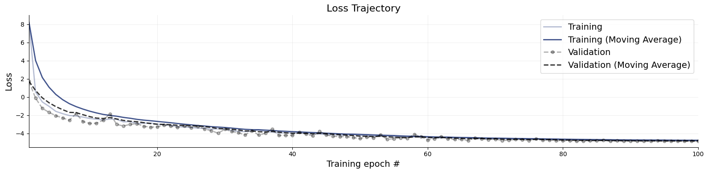
Great, it seems that our approximator has converged! Before we get too excited and throw our networks at real data, we need to make sure that they meet our expectations in silico, that is, given the small world of simulations the networks have seen during training.
7.7. Validation Phase#
When it comes to validating posterior inference, we can either deploy manual diagnostics from the diagnostics module, or use the automated functions from the BasicWorkflow object. First, we demonstrate manual validation.
# Set the number of posterior draws you want to get
num_datasets = 300
num_samples = 1000
# Simulate 300 scenarios
test_sims = workflow.simulate(num_datasets)
# Obtain num_samples posterior samples per scenario
samples = workflow.sample(conditions=test_sims, num_samples=num_samples, batch_size=64)
INFO:bayesflow:Sampling completed in 8.99 seconds.
7.7.1. Simulation-Based Calibration - Rank Histograms#
As a further small world (i.e., before real data) sanity check, we can also test the calibration of the amortizer through simulation-based calibration (SBC). See the corresponding paper for more details (https://arxiv.org/pdf/1804.06788.pdf). Accordingly, we expect to observe approximately uniform rank statistic histograms. In the present case, this is indeed what we get:
f = bf.diagnostics.plots.calibration_histogram(samples, test_sims)
WARNING:bayesflow:The ratio of simulations / posterior draws should be > 20 for reliable variance reduction, but your ratio is 0. Confidence intervals might be unreliable!
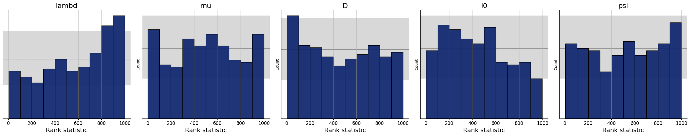
7.7.2. Simulation-Based Calibration - Rank ECDF#
For models with many parameters, inspecting many histograms can become unwieldly. Moreover, the num_bins hyperparameter for the construction of SBC rank histograms can be hard to choose. An alternative diagnostic approach for calibration is through empirical cumulative distribution functions (ECDF) of rank statistics. You can read more about this approach in the corresponding paper (https://arxiv.org/abs/2103.10522).
In order to inspect the ECDFs of marginal distributions, we will simulate \(300\) new pairs of simulated data and generating parameters \((\boldsymbol{x}, \boldsymbol{\theta})\) and use the function plots.calibration_ecdf from the diagnostics module:
f = bf.diagnostics.plots.calibration_ecdf(samples, test_sims, difference=True)
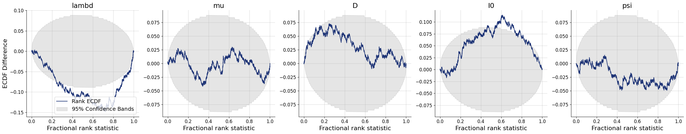
7.7.3. Inferential Adequacy (Global)#
Depending on the application, it might be interesting to see how well summaries of the full posterior (e.g., means, medians) recover the assumed true parameter values. We can test this in silico via the plots.recovery function in the diagnostics module. For instance, we can compare how well posterior means recover the true parameter (i.e., posterior z-score, https://betanalpha.github.io/assets/case_studies/principled_bayesian_workflow.html):
f = bf.diagnostics.plots.recovery(samples, test_sims)
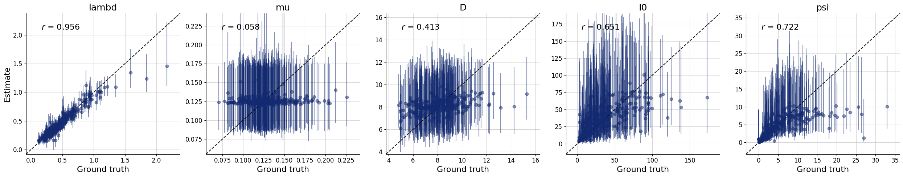
Interestingly, it seems that the parameters \(\theta_1 = \mu\) and \(\theta_2 = D\) have not been learned properly as they are estimated roughly the same for every simulated datset used during testing. For some models, this might indicate that the the network training had partially failed; and we would have to train longer or adjust the network architecture. For this specific model, however, the reason is different: From the provided observables, these parameters are actually not identified so cannot be learned consistently, no matter the kind of approximator we would use.
7.7.4. Automatic Diagnostics#
The basic workflow object wraps together a bunch of useful functions that can be called automatically. For instance, we can easily obtain numerical error estimates for the big three: normalized roor mean square error (NRMSE), posterior contraction, and calibration, for \(300\) new data sets:
metrics = workflow.compute_default_diagnostics(test_data=test_sims)
metrics
| lambd | mu | D | I0 | psi | |
|---|---|---|---|---|---|
| NRMSE | 0.049952 | 0.242762 | 0.202517 | 0.208692 | 0.156841 |
| Log Gamma | -9.720794 | 0.833023 | -0.870247 | -3.433166 | 1.643678 |
| Calibration Error | 0.048246 | 0.029912 | 0.044386 | 0.026930 | 0.028070 |
| Posterior Contraction | 0.970554 | 0.000000 | 0.242031 | 0.140539 | 0.637057 |
We can also obtain the full set of graphical diagnostics. The method below lets you control nearly all display features (can take a while):
figures = workflow.plot_default_diagnostics(
test_data=300,
loss_kwargs={"figsize": (15, 3), "label_fontsize": 12},
recovery_kwargs={"figsize": (15, 3), "label_fontsize": 12},
calibration_ecdf_kwargs={"figsize": (15, 3), "legend_fontsize": 8, "label_fontsize": 12},
coverage_kwargs={"figsize": (15, 3), "legend_fontsize": 8, "label_fontsize": 12},
z_score_contraction_kwargs={"figsize": (15, 3), "label_fontsize": 12}
)
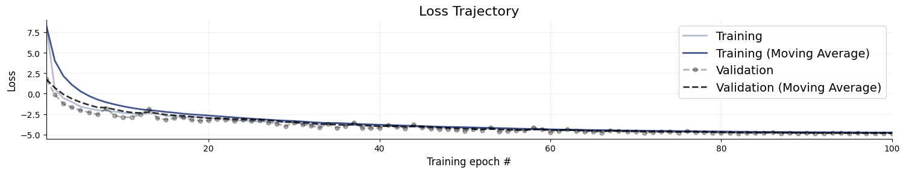
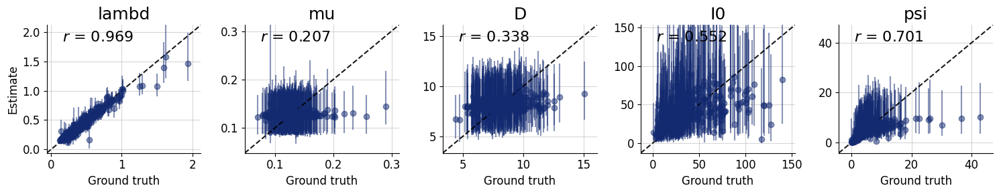
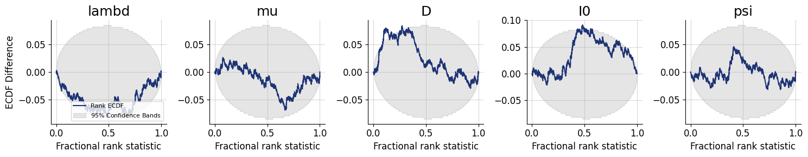
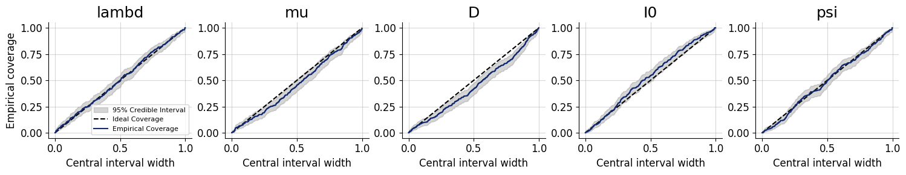
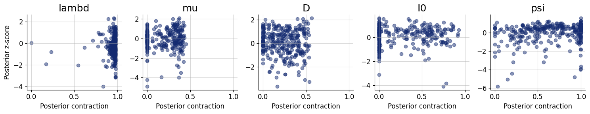
7.8. Inference Phase #
We can now move on to using real data. This is easy, and since we are using an adapter, the same transformations applied during training will be applied during the inference phase.
# Our real-data loader returns the time series as a 1D array
obs_cases = load_data()
# Note that we transform the 1D array into shape (1, T), indicating one time series
samples = workflow.sample(conditions={"cases": obs_cases[None, :]}, num_samples=num_samples)
# Convert into a nice format 2D data frame
samples = workflow.samples_to_data_frame(samples)
samples.head()
INFO:bayesflow:Sampling completed in 3.72 seconds.
| lambd | mu | D | I0 | psi | |
|---|---|---|---|---|---|
| 0 | 0.390036 | 0.099043 | 6.234670 | 32.743340 | 8.996722 |
| 1 | 0.421559 | 0.115470 | 7.058876 | 21.663240 | 3.465576 |
| 2 | 0.398256 | 0.121835 | 7.579012 | 25.629118 | 10.337679 |
| 3 | 0.355391 | 0.126252 | 9.969445 | 27.549803 | 5.316661 |
| 4 | 0.395808 | 0.117545 | 6.658669 | 28.238298 | 10.921645 |
7.8.1. Posterior Retrodictive Checks #
These are also called posterior predictive checks, but here we want to explicitly highlight the fact that we are not predicting future data but testing the generative performance or re-simulation performance of the model. In other words, we want to test how well the simulator can reproduce the actually observed data given the parameter posterior \(p(\theta \mid h(x_{1:T}))\).
Here, we will create a custom function which plots the observed data and then overlays draws from the posterior predictive.
def plot_ppc(samples, obs_cases, logscale=True, color="#132a70", figsize=(12, 6), font_size=18):
"""
Helper function to perform some plotting of the posterior predictive.
"""
# Plot settings
plt.rcParams["font.size"] = font_size
f, ax = plt.subplots(1, 1, figsize=figsize)
T = len(obs_cases)
# Re-simulations
sims = []
for i in range(samples.shape[0]):
# Note - simulator returns 2D arrays of shape (T, 1), so we remove trailing dim
sim_cases = stationary_SIR(*samples.values[i])
sims.append(sim_cases["cases"])
sims = np.array(sims)
# Compute quantiles for each t = 1,...,T
qs_50 = np.quantile(sims, q=[0.25, 0.75], axis=0)
qs_90 = np.quantile(sims, q=[0.05, 0.95], axis=0)
qs_95 = np.quantile(sims, q=[0.025, 0.975], axis=0)
# Plot median predictions and observed data
ax.plot(np.median(sims, axis=0), label="Median predicted cases", color=color)
ax.plot(obs_cases, marker="o", label="Reported cases", color="black", linestyle="dashed", alpha=0.8)
# Add compatibility intervals (also called credible intervals)
ax.fill_between(range(T), qs_50[0], qs_50[1], color=color, alpha=0.5, label="50% CI")
ax.fill_between(range(T), qs_90[0], qs_90[1], color=color, alpha=0.3, label="90% CI")
ax.fill_between(range(T), qs_95[0], qs_95[1], color=color, alpha=0.1, label="95% CI")
# Grid and schmuck
ax.grid(color="grey", linestyle="-", linewidth=0.25, alpha=0.5)
ax.spines["right"].set_visible(False)
ax.spines["top"].set_visible(False)
ax.set_xlabel("Days since pandemic onset")
ax.set_ylabel("Number of cases")
ax.minorticks_off()
if logscale:
ax.set_yscale("log")
ax.legend(fontsize=font_size)
return f
We can now go on and plot the re-simulations (i.e., perform a posterior “predictive” check on the fitted data):
f = plot_ppc(samples, obs_cases)
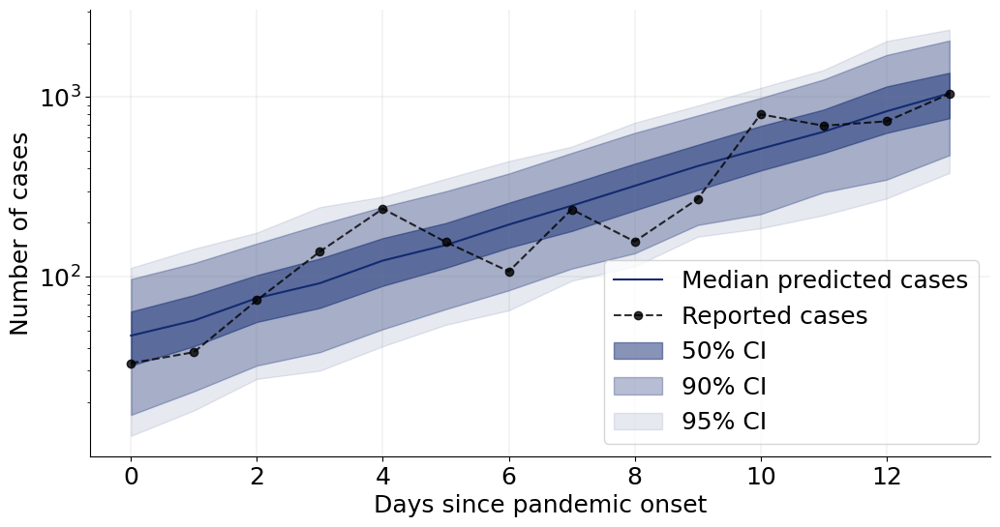
That’s it for this tutorial! You now know how to use the basic building blocks of BayesFlow to create amortized neural approximators. :)